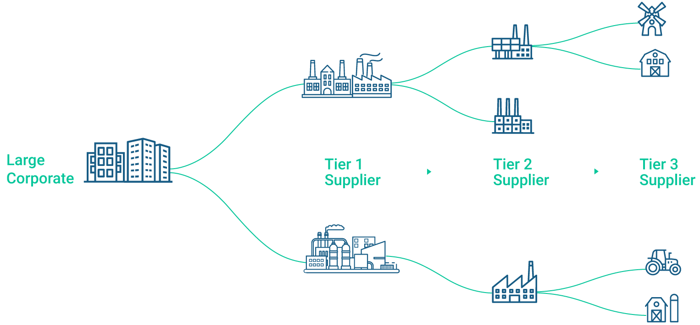
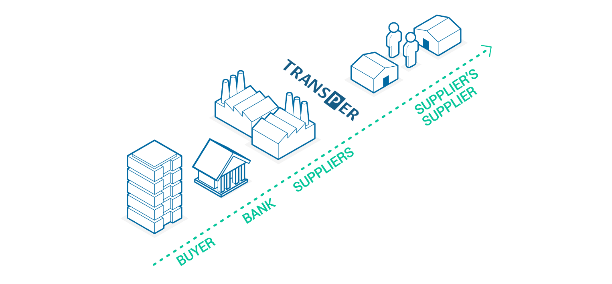
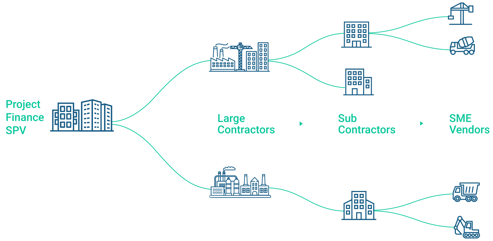

A leading multinational CPG company wanted to reduce costs, improve working capital while building provenance for goods sourced.
The challenge was that in large complex supply chains it was difficult, expensive and time-consuming to bring financial efficiencies and track provenance. SMEs in the deep tiered supply chain end up paying huge credit risk costs, financing costs, and processing costs and did not want to incur extra overhead for goods provenance.
Banks had challenges of getting credible information and carrying out manual processes based on segmented information. It was difficult to bring onboard a deep-tier supply chain for large corporations.

Transper demonstrated a win-win situation in deep supply chains of the large corporate by creating a deep-tier financing opportunity based on accepted invoices and credit risk of the large corporate. The process was intuitive and easy to implement:
We demonstrated benefits for every stakeholder within a year with minimal efforts including 6% savings for the large corporate. The benefits for all stakeholders on the platform are listed below:
A multi-billion-dollar firm had a management buy-out and wanted to get P&L cost benefits while ensuring early payments to their suppliers. They wanted to establish a conventional supplier financing programme.
Their challenges included the long time required to establish new financial rating and a high chance of getting less than preferred rating. Also, at lower rating, banks were not ready to finance the supplier finance programme. Securitization of their receivables was also expensive.

Transper demonstrated a win-win situation where the company offered supplier finance to its suppliers. Transper connected to the supplier financing programs set up by the company’s customers and used the liquidity to offer supplier financing to the suppliers. There was no need for any bank to finance this supplier finance program. The suppliers accepted early payment at the offered discount rates for extended credit periods. The process was intuitive and easy to implement:
Transper demonstrated a 6% APR savings for addressable third-party spend and increased credit periods conserving working capital. The benefits for all stakeholders on the platform are listed below:
A multi-million dollar infrastructure project had been commissioned and the project owner wanted to ensure that the project was delivered on time without any cost or time overruns while ensuring quality.
The challenge was that in large complex project supply chains it is difficult, expensive and time-consuming to have visibility and influence beyond immediate suppliers. Funds disbursed for the project were not reaching the intended suppliers in the extended supply chain. This led to suppliers prioritizing other projects leading to delays in delivery and also impacted quality since things were being rushed very close to deadlines resulting in cost overruns.

Transper demonstrated the provenance of the flow of funds in the project supply chain. The flow of finance to the key component delivered is a credible measure to ensure the delivery of the project on time, cost and quality. The process was intuitive and easy to implement:
Transper demonstrated tangible P&L benefits for every ecosystem player while de-risking the project and reducing cost and delays. The benefits for all stakeholders on the platform are listed below: